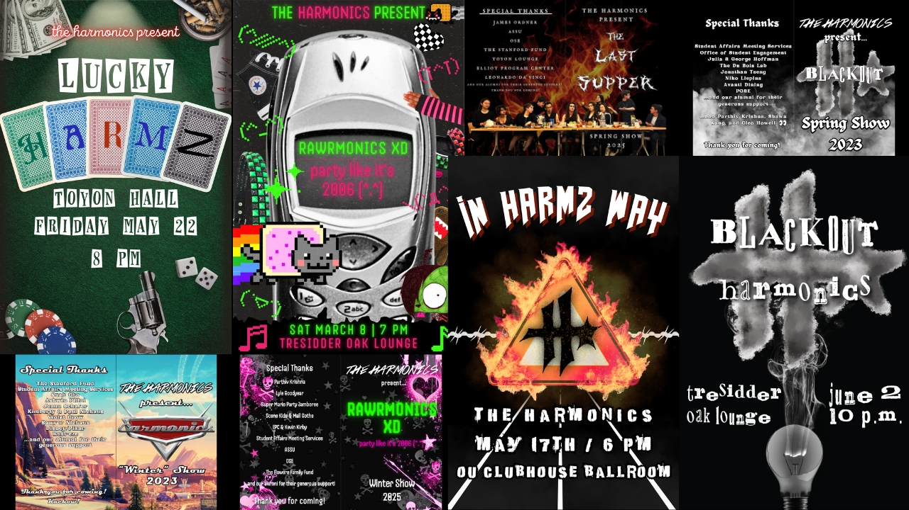

Web Redesign · Visual Design · Operations & Production
Stanford Harmonics
Redesigning the website, shaping the visual identity, and leading operations and album production across four years with Stanford’s award-winning rock & experimental a cappella group.

01 · The Problem
Why the Site Needed an Overhaul
A cappella at Stanford is competitive, and every September our website is the first place new students and prospective auditionees go to check us out. A clear, welcoming site makes a huge difference in convincing people to audition.
Our old site was built on a 2014 Squarespace 7.0 template that had become oudated and confusing to navigate. Information was spread across too many separate pages, photos and member bios were out of date, and there were very few modern media embeds for our music or videos. There was no easy way for visitors to book us, listen to our albums, or find our next show date.
02 · Website Redesign
Making Information Easy to Find
I decided to bring the website more in line with our current image, rethinking both the look of the site and how the pages were organized so visitors could immediately find what they came for:
I combined the separate “Listen,” “Albums,” and “Videos” pages into a single Music page with streaming embeds and music videos. I also added an Accolades section to highlight the group’s awards, which are one of our key differentiators in Stanford's competitive a cappella scene.
I created a new Shows page featuring upcoming concert info alongside an archive of past show posters and links to their YouTube playlists, and turned the contact page into a simple fillable form.
Because future group members might not have a technical background, I built the new site on the modern Squarespace engine so it remains easy for the group to update and maintain long after I graduate.
Following the redesign, average monthly traffic grew from roughly 200 to 350 visitors (+75%), and peak September traffic during audition season doubled from around 600 to 1,200 visitors (+100%).

03 · Visual Design
Four Years as Publicity Director
Beyond the website, I served as the Harmonics’ Publicity Director all four years at Stanford, handling the group’s visual identity, marketing, and print design.
I designed 6 show posters and programs across four years of performances.
I also created posters and multimedia promotional materials for 3 fall audition seasons, and designed the group's annual member merch all four years.


04 · Leadership & Production
President & Album Manager
Alongside my design work, I helped run the group’s day-to-day operations and music production:
As Business Manager (President), I managed all group operations, finances, equipment purchases, event logistics, internal knowledge management, and communications.
As Album Manager & Lead Recording Engineer, I led production for the group’s upcoming studio album, Ashes to Ashes, releasing later in 2026. I managed the recording process, schedule, and timeline and coordinated with our editor, mixer, mastering engineer, licensing partners, cover artist, and distributors. My arrangement of Toby Fox’s “BIG SHOT” will be featured on the album, as well as my solo on "Bottom of the Deep Blue Sea".